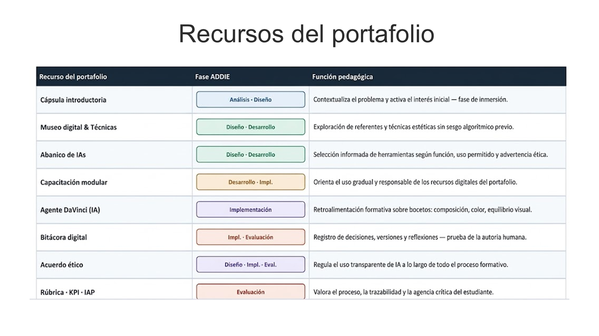
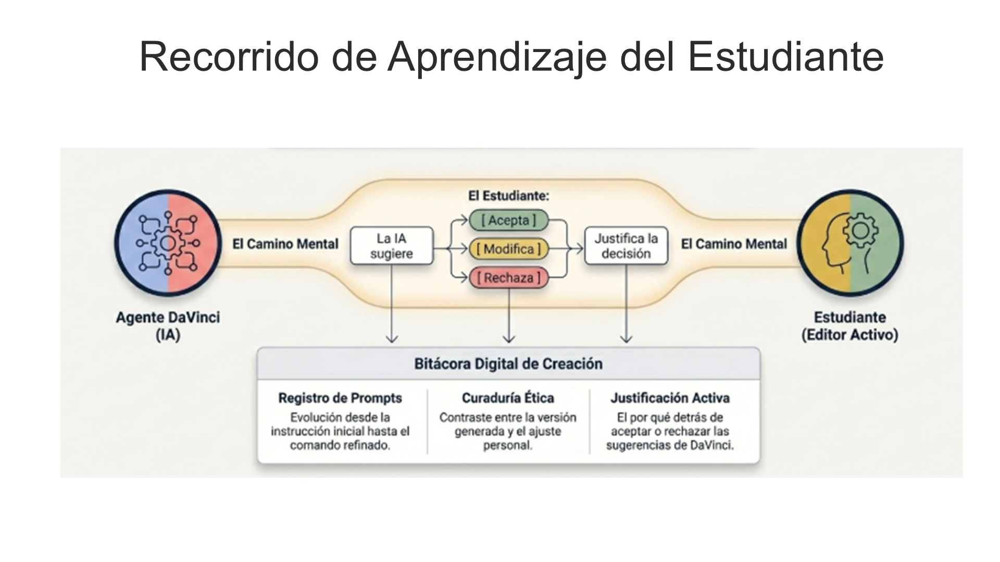
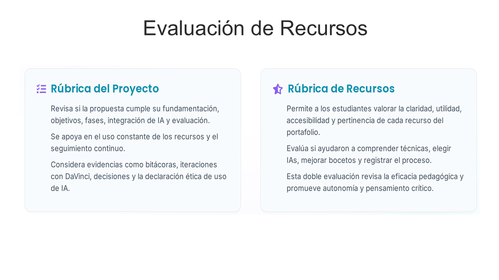

Diseño de Materiales didácticos en la enseñanza de la asignatura de estética mediante IA
Población Objetivo
Introducción y Justificación
Replantear el uso de las tecnologías dentro del espacio de clase. Se analizan los criterios de diseño, implementación y regulación del uso de la IA en el contexto escolar, con el fin de orientar una propuesta coherente con las necesidades formativas y fundamenten el diseño de materiales.
Problemática Identificada
Identificada por docentes y estudiantes en tres pilares principales:
- Uso Irresponsable de la IA
- Dependencia tecnológica
- Pérdida de la creación autónoma
Propuesta y Fundamentación
Propuesta: Implementación de materiales para integrar la IA en el proyecto de aula de cada estudiante por medio del desarrollo de estrategias pedagógicas orientadas al uso responsable.
Fundamentación: Transformar una problemática observada en el salón de clase en una oportunidad de integrar el uso de la IA en un proceso guiado.
DISEÑO RESPONSABLE Y FORMATIVO
Propone una Gobernanza Ética que organiza responsabilidades y protocolos de uso. Defiende que la IA debe ser un apoyo para la ideación visual, no un sustituto de la autoría.
Enfoque Humano
IA en educación: mediación pedagógica y transformación didáctica
Oportunidades y Riesgos
Diseño de materiales con IA y rol docente desde la IA Tpack
Gobernanza y Protocolos
Ética, autoría y gobernanza escolar del uso de IA
Objetivo General
Desarrollar un portafolio de recursos con materiales eficientes y personalizados diseñados con el apoyo de la IA para ser integrados en los proyectos de grado once, del Colegio Danilo Cifuentes con el fin de establecer normas de uso ético, responsable y transparente de la IA.
Específico 1
Realizar el fundamento teórico para el diseño y la estructura de materiales didácticos mediante la metodología ADDIE en el proceso de cada proyecto de los estudiantes de grado once en el espacio académico de estética.
Meta 1
Consolidar un marco referencial sólido y pertinente que permita el diseño de materiales que contextualicen a los estudiantes sobre los diferentes tipos de técnicas que pueden poner en práctica dentro de su proyecto de aula.
Específico 2
Desarrollar un abanico de IAs y una plataforma de apoyo que permitan integrar el uso responsable de la inteligencia artificial dentro del proyecto de aula de cada estudiante, en los procesos de dibujo, diseño, creación y análisis visual.
Meta 2
Establecer un repertorio de IAs que pueden utilizar los estudiantes para el desarrollo de su proyecto, resaltando un abordaje ético y responsable de la IA.
Objetivo General
Desarrollar un portafolio de recursos con materiales eficientes y personalizados diseñados con el apoyo de la IA para ser integrados en los proyectos de grado once, del Colegio Danilo Cifuentes con el fin de establecer normas de uso ético, responsable y transparente de la IA.
Específico 3
Diseñar un instrumento de seguimiento con criterios establecidos que permitan reconocer el proceso del estudiante en la ejecución de su proyecto.
Meta 3
Que el docente y estudiante puedan hacer un seguimiento del proceso, avance, integración y uso adecuado de la IA en el proyecto de aula.
Específico 4
Establecer unos criterios de evaluación que permitan reconocer la efectividad de los materiales en el proceso del estudiante.
Meta 4
Diseñar un instrumento evaluativo tipo rúbrica que permita determinar la viabilidad y eficacia del portafolio de materiales, asegurando que cumpla los objetivos y metas establecidas.
Fases del proyecto dirigido al diseño de materiales didácticos y sus respectivos docentes responsables:
| Actividades | (23-28) MAR | (6-11) ABR | (13-18) ABR | (20-25) ABR | (27-02) A-M | (04-09) MAY | (11-16) MAY | (18-23) MAY | (25-30) MAY | (01-06) JUN |
|---|---|---|---|---|---|---|---|---|---|---|
| Planeación de Proyecto | • Lluvia de ideas • Población • Cronograma |
• Problemática • Justificación • Objetivos • Fundamentos |
• Fases • Metodología • Evaluación |
Revisión de la planeación | SOCIALIZACIÓN Y RETROALIMENTACIÓN FINAL DE LA ASIGNATURA | |||||
| Documento de planeación | • Problemática • Justificación • Objetivos • Fundamentos |
• Fases • Metodología • Evaluación |
Estructuración final del diseño instruccional | |||||||
| Elaboración de recursos | Elaboración de las plantillas didácticas | Ejecución de prompts en IAs y calibración | Homogeneización entre plantillas y productos IA | Ajustes finales a recursos | ||||||
| Evaluación de recursos | Asesoría y delimitación de recursos | |||||||||
| Trabajo Final | Organización final del portafolio | Presentación del portafolio en clase |
Estructura en Fases
ADDIE organiza el diseño de materiales educativos mediante cinco fases: Análisis, Diseño, Desarrollo, Implementación y Evaluación.
Puente Pedagógico
En este proyecto, permite pasar de una problemática institucional a una propuesta pedagógica concreta para la asignatura de Estética.
Definición de Necesidades
Ayuda a definir qué necesita el estudiante, qué recursos crear, cómo implementarlos y evaluarlos en el transcurso del proyecto.
Coherencia Curricular
Asegura la coherencia lógica entre la problemática inicial, los objetivos planteados, los materiales y el uso guiado de la IA.
Intencionalidad de la IA
Permite que la IA tenga una intención pedagógica clara (exploración visual, retroalimentación formativa y desarrollo de autonomía).
Roles del Docente y Estudiante
El docente asume el rol de diseñador y mediador del aprendizaje, mientras que el estudiante actúa como usuario crítico registrando su proceso.


